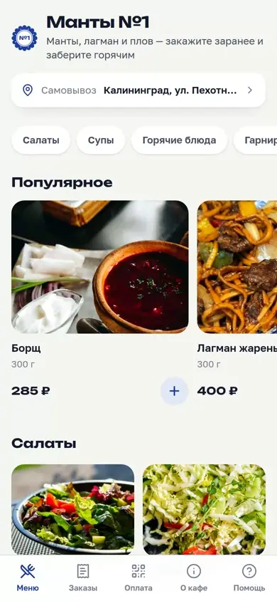
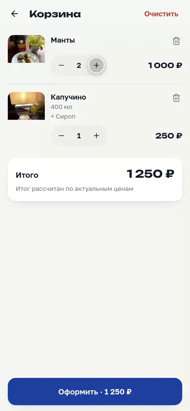
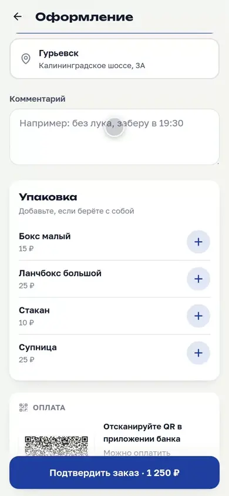
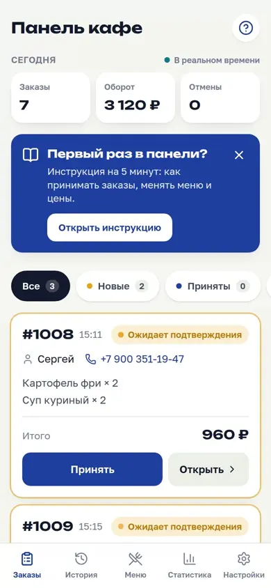
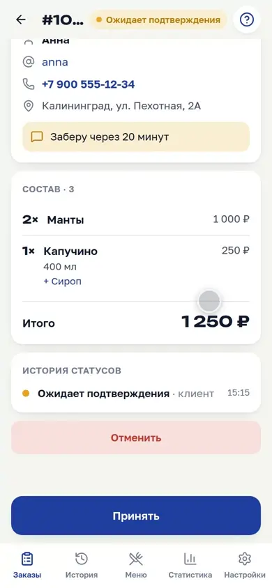
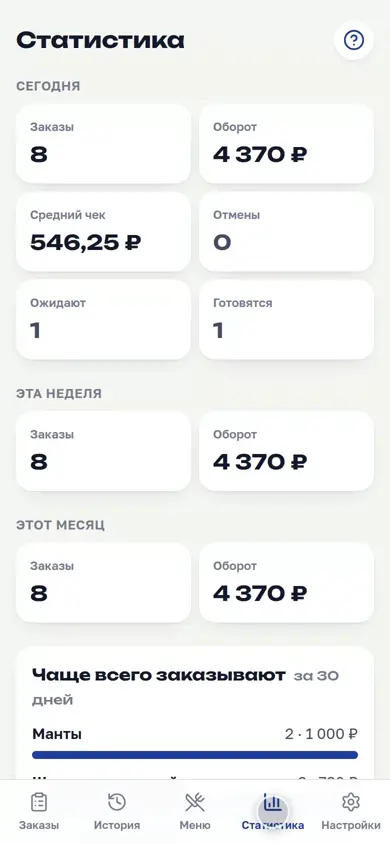

Кафе принимает заказы прямо в Telegram
Гость открывает меню в чате, собирает корзину и следит за статусом. Владелец ведёт заказ с телефона: принял, готовится, готов — гость видит это в ту же секунду. Два филиала, три языка, оплата по QR.
Запись настоящей системы: 1 минута 42 секунды, без монтажных склеек и постановочных экранов
Не рассказ, а рабочее приложение
В рамке телефона — демо-версия приложения с настоящим меню и фотографиями кафе. Закажите что-нибудь как гость, потом переключитесь на владельца и проведите свой заказ по статусам.
- Выберите блюдо, соберите корзину и оформите заказ — поля можно заполнить любыми.
- Переключитесь на владельца: ваш заказ уже первым в очереди.
- Проведите его по статусам и вернитесь к гостю — путь заказа виден с обеих сторон.
Демо-версия работает прямо в браузере и никуда ничего не отправляет: меню, цены и фотографии настоящие, заказы существуют только на этой странице. Правила смены статусов те же, что в кафе: пропустить шаг или отыграть назад нельзя.
Гость заказывает, владелец ведёт
Гость
Ничего не устанавливает: меню открывается кнопкой в чате бота.
- Выбирает филиал и блюдо — с фотографиями из самого кафе, весом и составом.
- Собирает корзину — варианты и добавки, итог считает сервер.
- Оформляет заказ — имя из Telegram, телефон одной кнопкой, комментарий.
- Следит за статусом — в приложении и сообщением от бота.



Владелец
Тот же адрес открывает панель — но только для тех, чей Telegram внесён в список.
- Видит заказ сразу — карточка появляется без перезагрузки.
- Ведёт его по статусам — принят, готовится, готов, завершён.
- Правит меню сам — цена, фото, стоп-лист; программист не нужен.
- Смотрит статистику — выручка, средний чек, ходовые позиции.



Что под капотом
Живые обновления
Статусы доезжают потоком SSE: у гостя и в панели всё меняется без перезагрузки и без опроса сервера по таймеру.
Доступ и подпись
Каждый запрос несёт подписанную Telegram initData, подпись проверяется заново. Панель закрыта для всех, кроме внесённых владельцев — проверено на девятнадцати админских маршрутах.
Цена содержания
в день: VPS в России, HTTPS от Let's Encrypt, адрес без покупки домена. Обновление — перенос готовых образов на сервер.
Запас по нагрузке
страниц в секунду при ста одновременных соединениях, фотографии — 249/с. Память под нагрузкой: 569 МБ из 961.
Три языка
Русский, польский и английский. Ни одной строки текста в вёрстке: интерфейс собирается из словарей, типы проверяет компилятор.
Проверки
автотестов плюс сквозной сценарий в браузере: заказ проходит путь от корзины до архива, как у настоящего гостя.
Кафе работает с этим каждый день
Меню, цены и стоп-лист они меняют без меня — для этого в панель встроена инструкция.
Раньше заказы принимали голосом по телефону, теперь состав и телефон гостя сразу на экране.
Всё содержание — 480 ₽ в месяц, без абонентских платежей за чужую платформу.